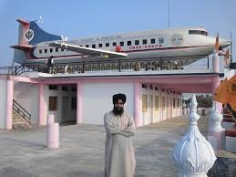

Heritage Site - Plane building
It is maket Where you can bye anything in holecell rate as well as in good rate its a very big and vast market in nanded city . thir any thing you needed can be get and its old and have 4 directional road collpse.
History of Mondha
Nanded urban area is 63.22 square kilometres (24.41 sq mi). Nanded is built on the Deccan Traps lava flows of the upper cretaceous to lower eocene eras. The lava flows are overlain by thin alluvial deposits. The lava flows are horizontal and each flow has two distinct units. The highly weathered vesicular trap and underlying weathered jointed and fractured massive trap constitutes the main water-yielding zones. The soil is mostly formed from igneous rocks and are black, medium black, shallow and calcareous types having different depths and profiles.[citation needed] Godavari River passes through the city.
about more......